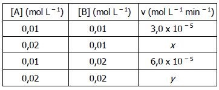

3A + B → 2C v = k[A]2[B]
A velocidade dessa reação foi determinada em dependência das concentrações dos reagentes, conforme os dados relacionados a seguir.

Assinale, respectivamente, os valores de x e y que completam a tabela de modo adequado.
A) 6,0 x 10–5 e 9,0 x 10–5
B) 6,0 x 10–5 e 12,0 x 10–5
C) 12,0 x 10–5 e 12,0 x 10–5
D) 12,0 x 10–5 e 24,0 x 10–5
E) 18,0 x 10–5 e 24,0 x 10–5
Fonte: https://www.infoescola.com/quimica/cinetica/exercicios/